⛰Magnolia Road
Off Boulder Canyon and straight up onto a dirt shelf road. It tops out on a high plateau of ranches and ponderosa pines with the Indian Peaks lined up to the west.
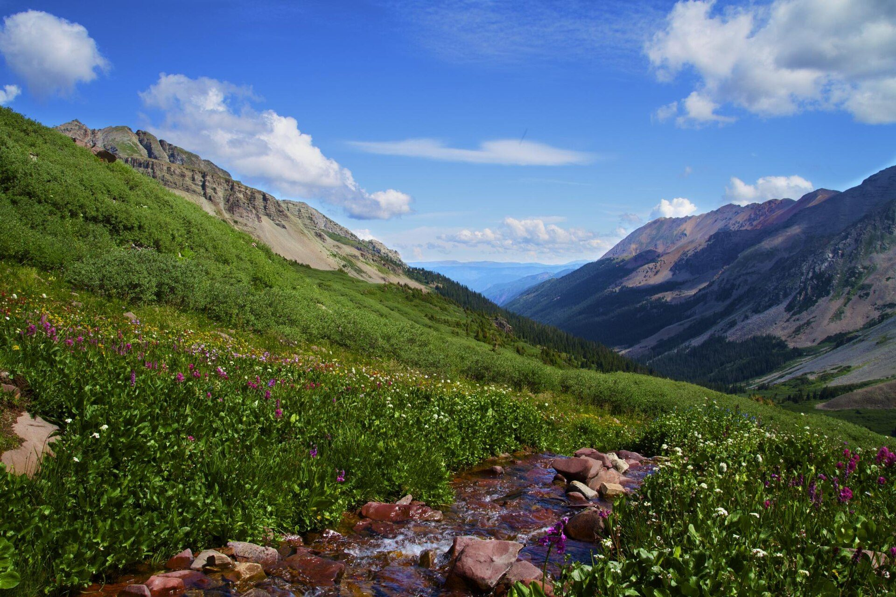
4 days · Salida, then 2 nights in Gunnison
The most dirt in the catalog: old railroad passes, Lake City, a loop day over Kebler and Cumberland passes, and home over Cottonwood.
Why ride it
For riders who came for the dirt. Day one is the Salida run: Magnolia Road, the Oh My God Road, the South Platte and the Ute Trail. Day two crosses the Continental Divide on Marshall Pass's old railroad grade and wanders the empty Cochetopa Hills to Lake City, then crosses the Alpine Plateau to Gunnison. The loop day is Kebler Pass's aspens, lunch in Crested Butte, Taylor Park, the old camp of Tincup and Cumberland Pass at 12,000 ft. Home is over Cottonwood Pass with lunch in Leadville.
The whole trip
Scroll or pinch to zoom; roads and their names appear as you zoom in. Day 1 in orange, day 2 in raspberry, day 3 in navy, day 4 in violet. Maps: © OpenStreetMap contributors, SRTM | style © OpenTopoMap (CC-BY-SA); relief and rivers: USGS The National Map.
Day 1
200 mi · about 6 h of riding · half of it dirt
Boulder to Idaho Springs · 39 mi
Off Boulder Canyon and straight up onto a dirt shelf road. It tops out on a high plateau of ranches and ponderosa pines with the Indian Peaks lined up to the west.

Miners called this gulch the richest square mile on earth. Red-brick streets, mine dumps on every hillside, and an 1878 opera house that still puts on shows.

A near-empty gold camp up the gulch: false fronts, mine dumps, and a Masonic lodge that still meets in its own ghost town.
Locals named it well. A narrow dirt shelf road snakes over the ridge from Central City and drops into Idaho Springs past old mine workings, with long views the whole way down.

Coffee on Miner Street among the old storefronts. Indian Hot Springs, a few blocks along, has steamy cave baths cut into the hillside. Save that thought for the ride home.
Idaho Springs to Lake George · 90 mi
Past Evergreen Lake and onto quiet back roads through the pines.
Foxton Road and the South Platte River Road follow the water down a deep granite canyon. Easy riverside dirt, fly fishers knee-deep in Gold Medal trout water, and the little store at Deckers.
A quiet, sandy forest road through pink granite and pines to Lake George.
A tiny mountain hamlet on US 24, and lunch.

Gravel along the river through rock tunnels left by the old Colorado Midland Railway. Ride in, turn around whenever you like.
Giant petrified redwood stumps, 34 million years old, in a high meadow. A national monument with an easy loop walk.
Lake George to Salida · 70 mi

The reservoir comes into view below as the road climbs out of the pines into open high country.
Big, empty country: old volcanic hills, cattle, pronghorn, and dirt roads that go on for miles without another vehicle. A few miles of rough forest road near the end of this stretch; skip it after heavy rain.

The finale follows an old Ute route off the high country to the Arkansas River, with the Sawatch Range's fourteeners filling the windshield.

Tonight
One of Colorado's biggest historic downtowns, all brick, right on the Arkansas River. Patios and brewpubs on F Street, a riverside walk where rafters and surfers play in the town's whitewater park, and a soak at the Salida Hot Springs Aquatic Center, one of the country's biggest indoor hot springs pools.
Day 2
199 mi · about 6 h of riding · 60% dirt
Salida to Los Pinos Pass · 96 mi
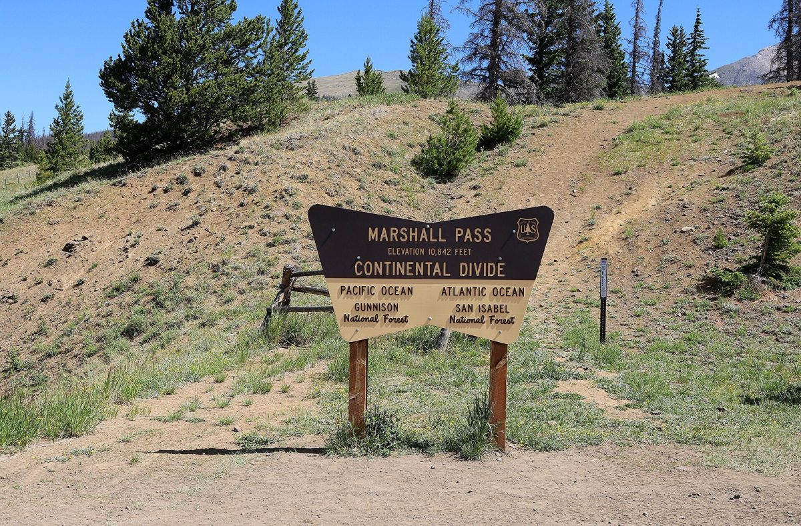
The Denver & Rio Grande's narrow-gauge trains crossed the Continental Divide here at 10,842 ft. The road is the old grade: gentle, curving gravel with Mount Ouray towering over the top.
The little railroad stop at the bottom of the pass, with a wooden water tank from the steam days.
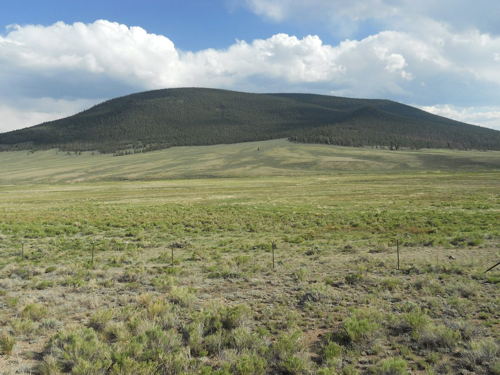
Cochetopa is the Ute name for the pass of the buffalo. Old Cochetopa Pass Road crosses big, empty sagebrush parks and pine hills where you may not see another vehicle for an hour. In April 1874 Alferd Packer walked out of the winter mountains to the Los Pinos Indian Agency in these hills, alone.
Over 10,500 ft and down Cebolla Creek, a quiet gravel valley of beaver ponds and old cow camps.
Los Pinos Pass to Lake City · 30 mi

At 11,530 ft. Windy Point overlooks Lake San Cristobal and the Slumgullion, a slow-moving earthflow that dammed the lake 700 years ago and is still creeping today.
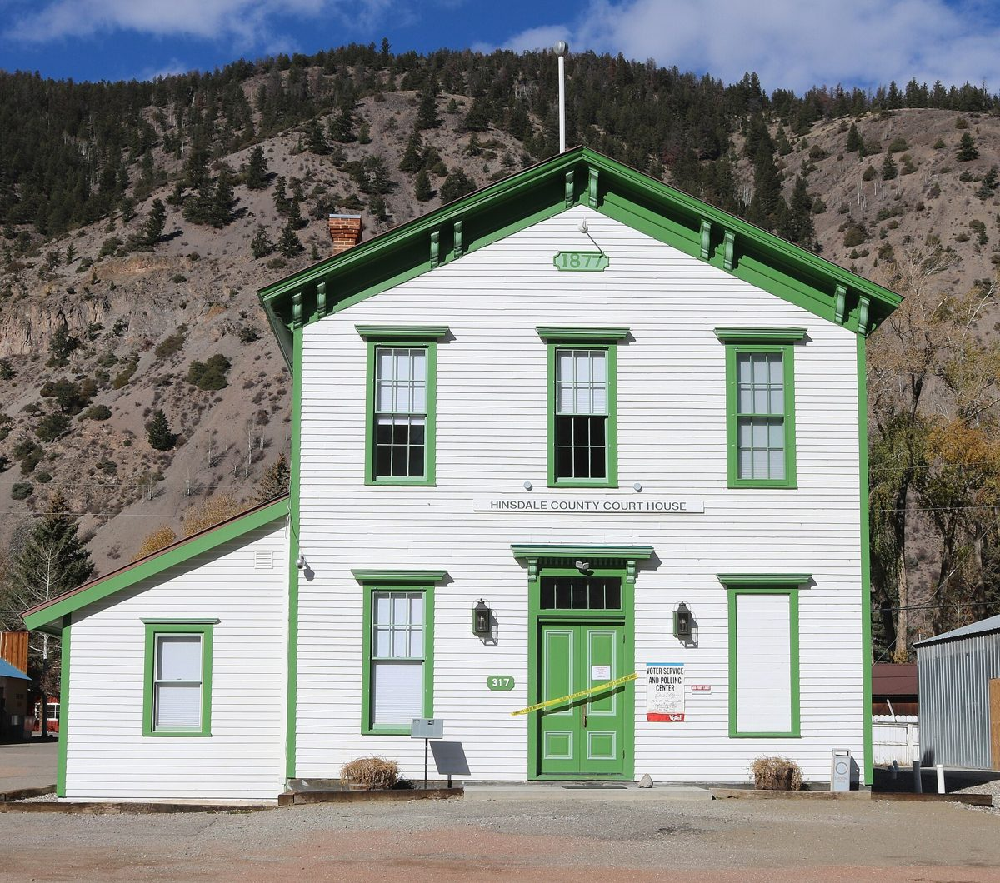
A late lunch in a Victorian silver town, two-thirds of the way along: bring a snack for the morning. The remains of the five men who went into the mountains with Alferd Packer were found near here in August 1874.
Lake City to Gunnison · 72 mi
A long dirt road across a high, open plateau with the San Juans lined up behind you.
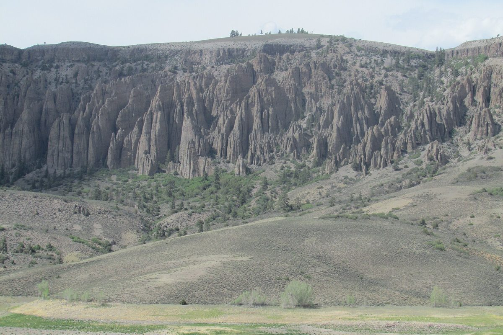
The biggest lake in Colorado, with the volcanic spires of the Dillon Pinnacles across the lake from US 50.
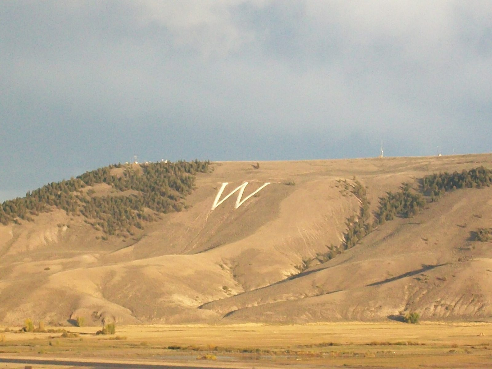
Tonight
A ranch and college town on the Gunnison River, with the big W of Western Colorado University on the hill. Easy and friendly, with plenty of places to eat, and the jumping-off point for the loop day.
Day 3
167 mi · about 5 h · more than half dirt
Gunnison to Crested Butte · 57 mi
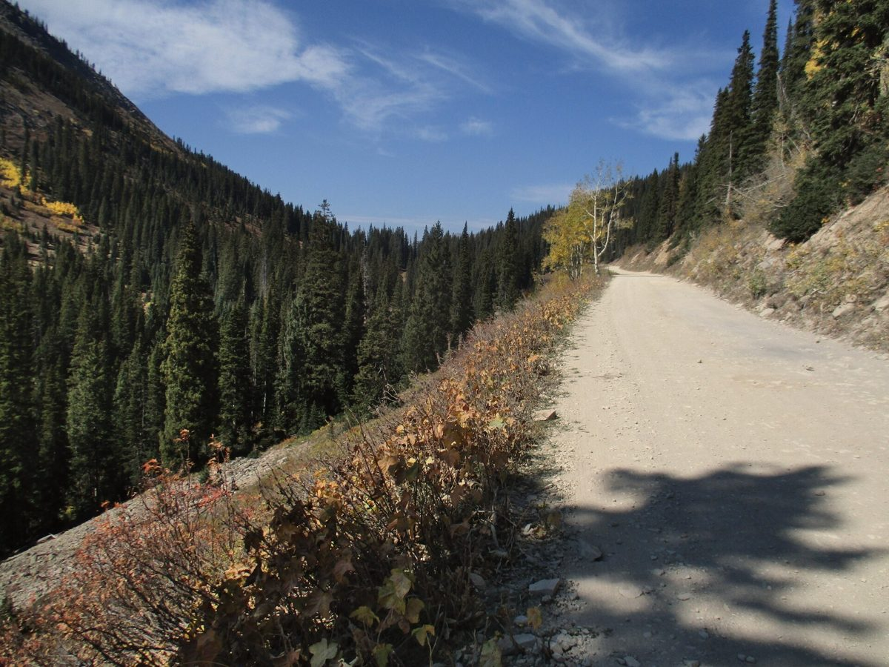
Up a ranch valley under the Castles, a ridge of volcanic towers, to Ohio Pass.
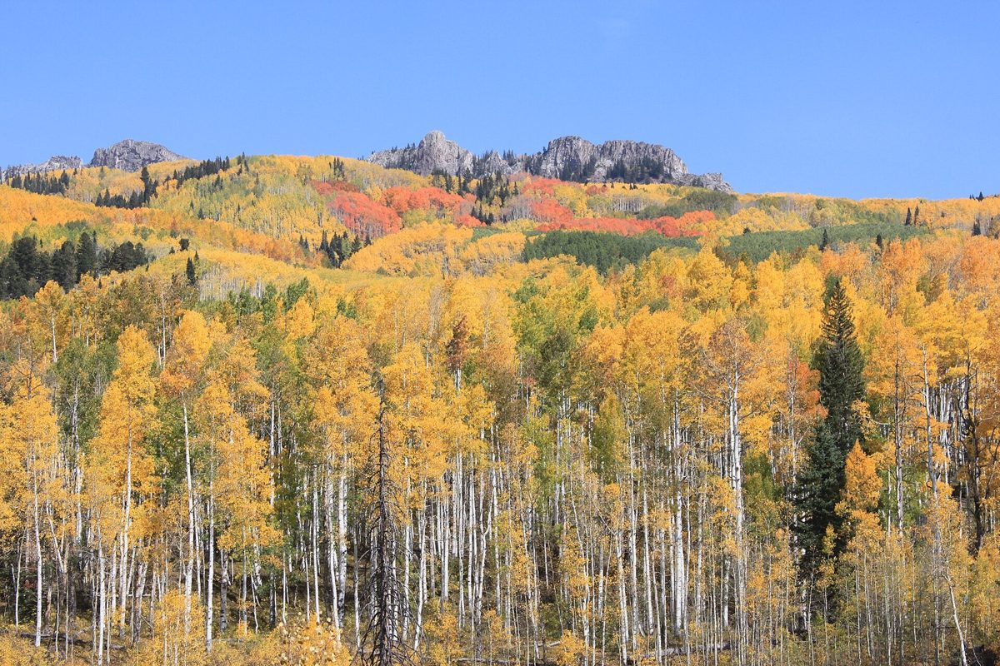
Gravel through one of the largest aspen groves in North America. Late September is unforgettable.
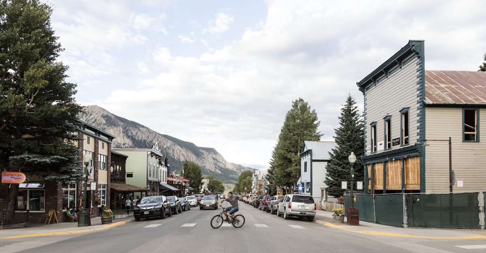
Painted false-front buildings on Elk Avenue in a valley famous for July wildflowers. One of the best lunch towns in Colorado.
Crested Butte to Gunnison · 110 mi

Over the Jacks Cabin Cutoff to a wide, high park and its reservoir, with the Collegiate Peaks lined up along the east.
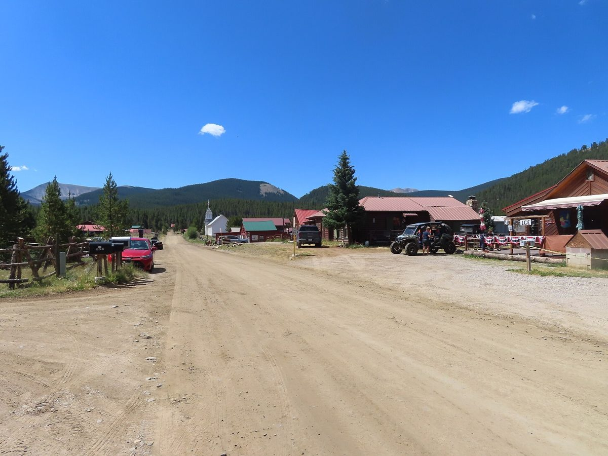
A wild 1880s mining camp, now a handful of log cabins. Its cemetery has four little hills: Protestant, Catholic, Jewish and Boot Hill.
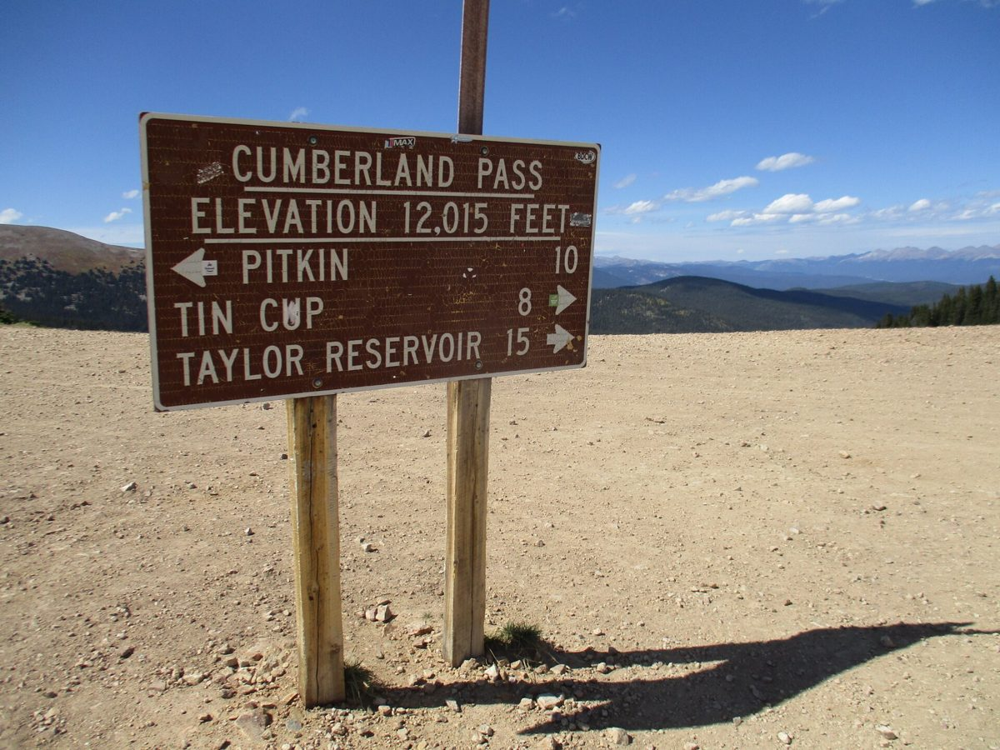
Gravel to just over 12,000 ft above timberline, with mountains in every direction.
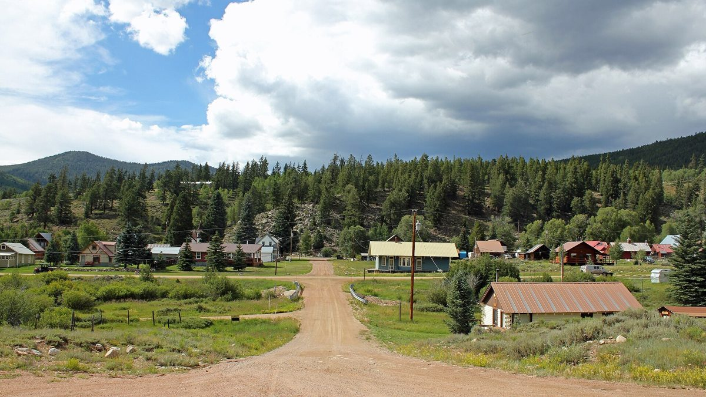
A quiet old mining camp of dirt streets and cottages, once on the railroad line that ran through the Alpine Tunnel under the Divide.
One more gravel pass, past the old Waunita Hot Springs ranch, and back to Gunnison.
Day 4
227 mi · about 4¾ h · a little dirt
Gunnison to Leadville · 110 mi

Through Taylor Park and over the Continental Divide at 12,126 ft, the Collegiate Peaks spread out to the east.
Rustic hot pools in the pines right beside the road down to Buena Vista.

Lunch in America's highest incorporated city, among the brick blocks of the silver boom.
Leadville to Boulder · 117 mi
Past the Climax mine and down Tenmile Creek to Frisco.

The Continental Divide one last time, at 11,990 ft.

Past the Georgetown Loop and Idaho Springs, then down Clear Creek's tunnels to Golden and home.